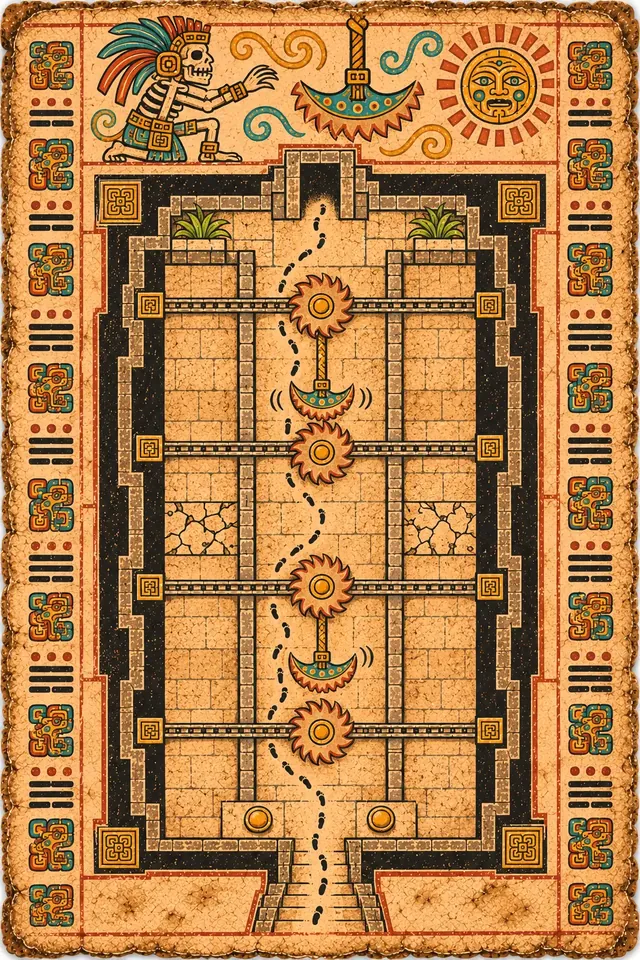
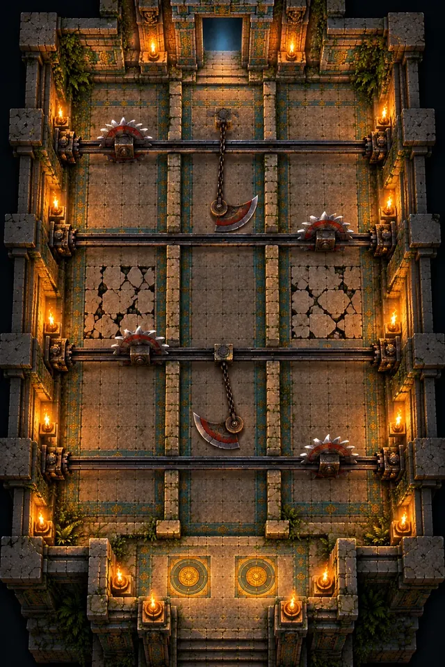

T2A
The Saw Gallery
A long hall split into three lanes by low walls. Circular saw blades race along floor tracks across all three lanes, pendulum blades swing over the middle one, and strips of floor crumble into a trench.
Scarab swarms break the rhythm just when you have found it.



